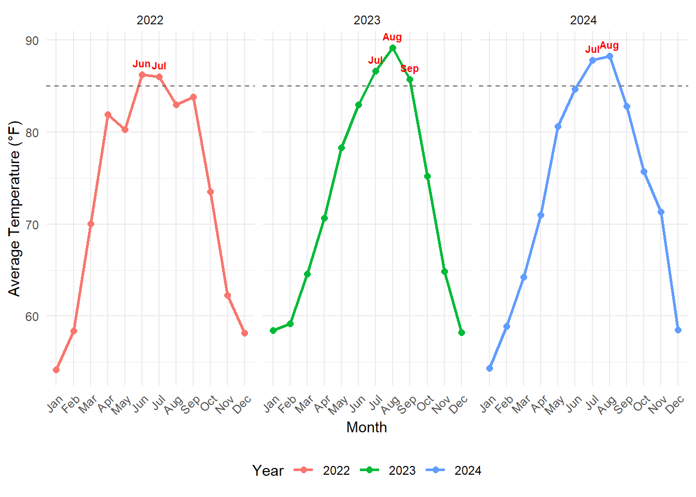
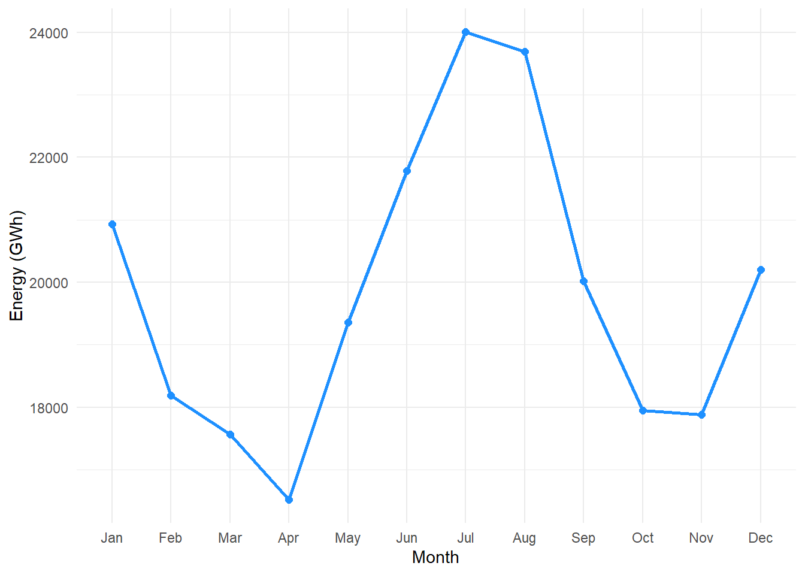
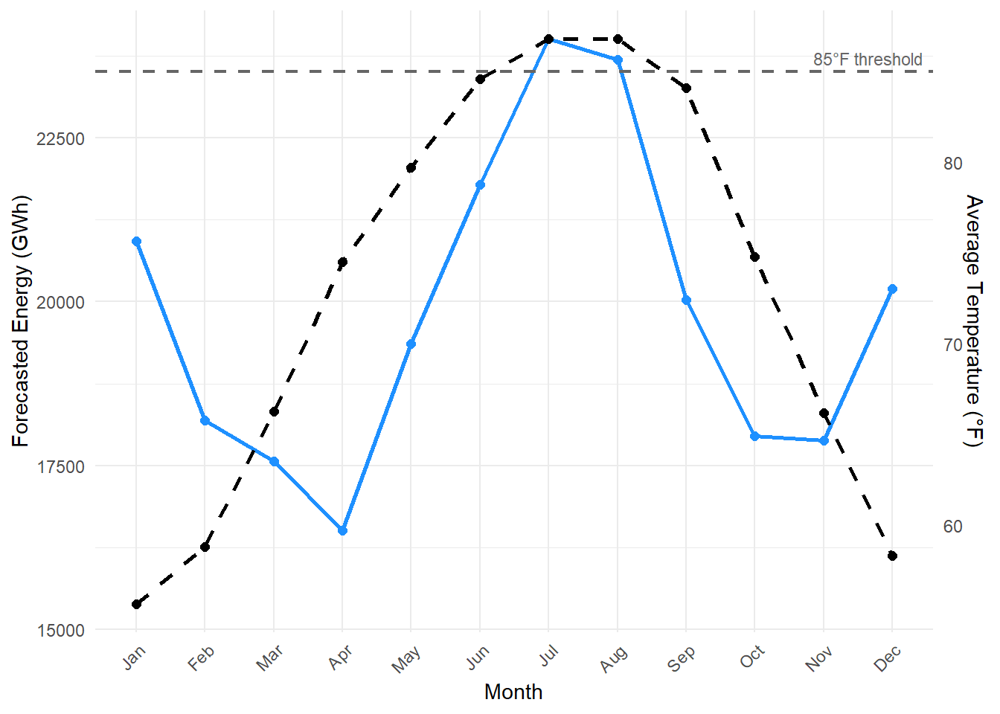

| Month | 2022 Avg Temp (°F) | 2023 Avg Temp (°F) | 2024 Avg Temp (°F) |
|---|---|---|---|
| Jan | 54.2 | 58.5 | 54.3 |
| Feb | 58.4 | 59.2 | 58.9 |
| Mar | 70.0 | 64.6 | 64.2 |
| Apr | 81.9 | 70.7 | 71.0 |
| May | 80.3 | 78.3 | 80.6 |
| Jun | 86.2 | 83.0 | 84.7 |
| Jul | 86.0 | 86.6 | 87.8 |
| Aug | 83.0 | 89.2 | 88.3 |
| Sep | 83.8 | 85.7 | 82.8 |
| Oct | 73.5 | 75.2 | 75.7 |
| Nov | 62.3 | 64.9 | 71.3 |
| Dec | 58.2 | 58.2 | 58.5 |
2 Report
2.1 Introduction
Power plants generate a lot of heat and therefor need to cooled down. Many power plants rely on water to cool the equipment and maintain stable operations. However, this can have significant impacts environmentally and economically ((Bergmann2024?)). The power plant examined in this report is located in Dauphin Island, Alabama, and uses water from the Gulf of Mexico. At the time the plant was constructed, it was assumed the Gulf water temperature would remain below 85°F; temperatures exceeding this threshold would require the plant to run at reduced capacity. With ocean temperatures rising, it’s essential to evaluate whether the plant can operate at full capacity throughout the year. This report analyzes historical ocean temperature data alongside electricity demand forecasts to assess operational risks.
Operating below full capacity poses economic and reliability concerns, especially during periods of peak electricity demand, potentially leading to shortages or increased costs.
2.2 Methods
2.2.1 Data Sources
Sea-surface Temperature ((NERC?)):
Hourly water temperature readings were collected from a buoy near Dauphin Island for the period January 2022 through December 2024.Electricity Usage Forecasts ((NBCD-h?)) :
Forecasts of “Net Energy For Load” for 2024 were obtained from the North American Electric Reliability Corporation, focusing on the Southeastern U.S. (SERC-SE region).
2.2.2 Temperature Data Preparation
Collecting and Combining Data
- Loaded three separate text files (one per year: 2022, 2023, 2024) and row-bound them into a single dataset.
Cleaning the Data
- Retained only the year, month, day and raw temperature columns.
- All placeholder values (temperatures ≥ 999) were removed, and April 2022 readings above 28.5 °C (instrument glitch) were excluded.
- Retained only the year, month, day and raw temperature columns.
Converting Temperature and Formatting Dates
- Temperatures were converted from Celsius to Fahrenheit.
- A proper
datecolumn was created in “year-month-day” format.
- Temperatures were converted from Celsius to Fahrenheit.
2.2.3 Monthly Temperature Averages
- Calculated the average temperature for each combination of year and month.
- Each month was flagged as “Above 85 °F” or “Below 85 °F” for easy highlighting.
- A three-letter month label (Jan, Feb, …) was assigned for plotting.
- Then averaged those monthly values across all three years to create a long-term baseline for each calendar month.
2.2.4 Electricity Usage Data Preparation
Loading and Filtering Data
- The 2024 forecast spreadsheet was read in, then filtered to only include the SERC-SE region and the “Reporting Year Forecast – Net Energy For Load” series.
Reshaping Data
- The twelve monthly columns (Jan–Dec) were pivoted into long form with one row per month.
- Energy values were converted to numeric and the
Monthcolumn was ordered from January through December.
- The twelve monthly columns (Jan–Dec) were pivoted into long form with one row per month.
2.2.5 Combined‐Plot Calculations
- To overlay temperature and energy on the same chart, we computed a scaling factor by dividing the maximum 2024 energy forecast by the maximum three-year average temperature. This ensured both series share a sensible dual-axis scale.
2.3 Results
2.3.1 Combined Analysis and Visualization
Average monthly temperatures across all years were calculated to identify general trends.
Electricity usage and temperature data were visualized together to assess potential relationships around the 85°F threshold.
2.3.2 Temperature Analysis
Analysis of water temperature data from the Dauphin Island buoy (2022–2024) reveals seasonal patterns, notably months exceeding 85 °F.
2.3.2.1 Table: Monthly Average Water Temperatures (°F) at Dauphin Island (2022–2024)
Figure: Monthly Average Temperature by Year with 85 °F Threshold

2.4 Electricity Usage Forecast (2024)
The 2024 forecast for “Net Energy For Load” in SERC-SE shows peaks in mid-summer.
2.4.1 Table: Forecasted Net Energy For Load (GWh) by Month for SERC-SE (2024)
| Month | Energy (GWh) |
|---|---|
| Jan | 20928 |
| Feb | 18190 |
| Mar | 17563 |
| Apr | 16515 |
| May | 19353 |
| Jun | 21785 |
| Jul | 24007 |
| Aug | 23694 |
| Sep | 20023 |
| Oct | 17945 |
| Nov | 17883 |
| Dec | 20201 |
Figure: Forecasted Net Energy for Load by Month (2024)


2.5 Relationship Between Temperature and Electricity Usage
Overlaying the 2022–2024 avg temperatures with the 2024 energy forecast shows coincident peaks.
2.5.1 Table: Comparison of Avg Temp (°F, 2022–24 Avg) & Forecasted Energy (GWh, 2024)
| Month | Avg Temp (°F) | Energy (GWh) |
|---|---|---|
| Jan | 55.7 | 20928 |
| Feb | 58.8 | 18190 |
| Mar | 66.3 | 17563 |
| Apr | 74.5 | 16515 |
| May | 79.7 | 19353 |
| Jun | 84.6 | 21785 |
| Jul | 86.8 | 24007 |
| Aug | 86.8 | 23694 |
| Sep | 84.1 | 20023 |
| Oct | 74.8 | 17945 |
| Nov | 66.2 | 17883 |
| Dec | 58.3 | 20201 |
Figure: Monthly Forecasted Energy & Avg Temperature with 85 °F Threshold

2.6 Conclusion
The rising temperatures in the Gulf of Mexico consistently exceed the critical operational threshold of 85°F during peak summer months, particularly July and August. The number of days with temperatures above this limit is likely to rise further due to climate trends. Given that peak electricity usage coincides with these hotter months, operating the plant at reduced capacity presents significant risks to reliability and supply.
2.6.1 Recommendations
Given these findings, the plant should consider:
Exploring alternative cooling technologies to maintain capacity during high-temperature months.
Investing in energy storage or supplemental energy generation capacity.
Conducting further economic impact analyses and predictive modeling under different climate scenarios.